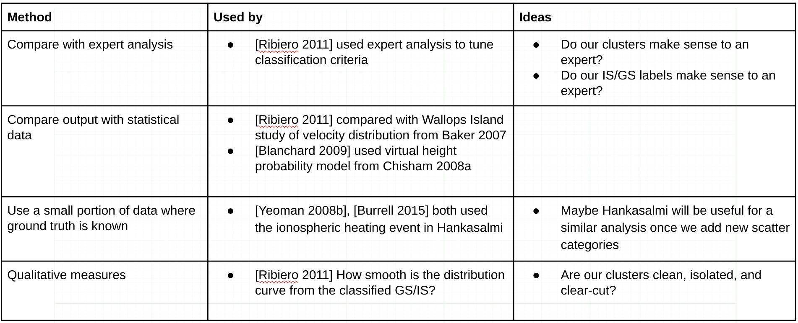
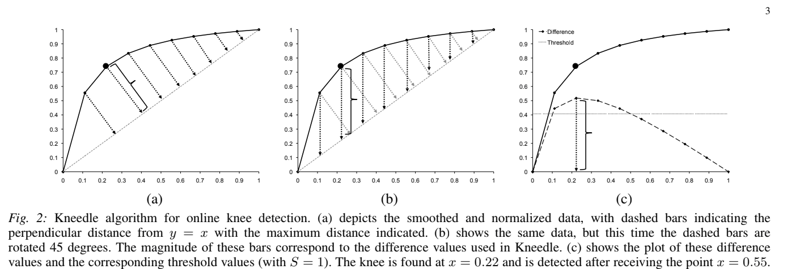
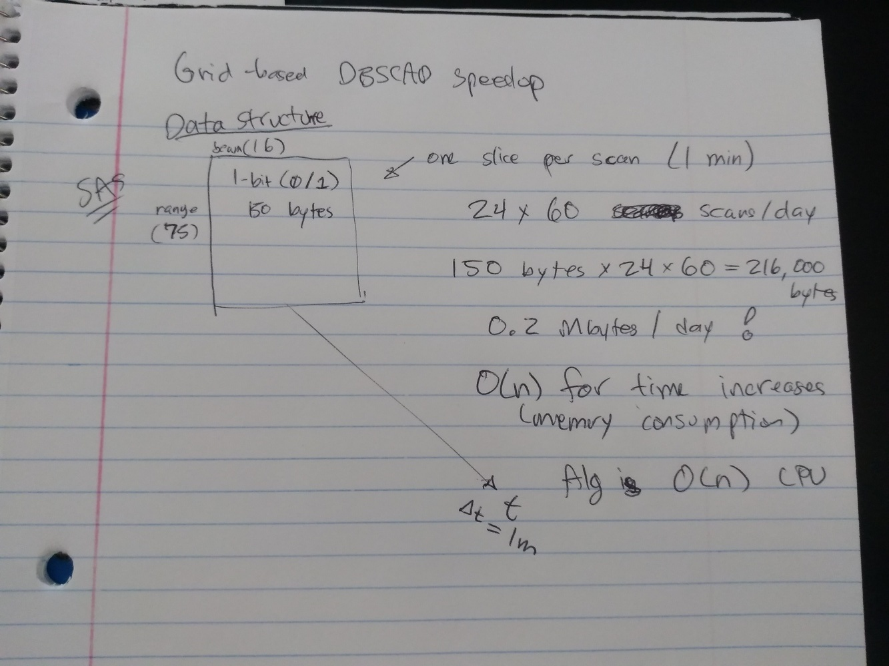
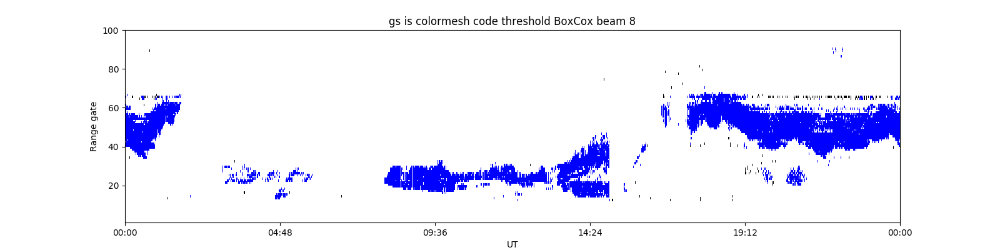

Validate the predictions [6/11 to 7/09, 4 weeks]
- Research methods of validating radar scatter. Start with how the Bland et. al. method was validated. Also make note of any methods for validating the types of scatter which will be added later, including mixed scatter and meteor scatter.
- Based on that research, write code to test the algorithm’s predictions.
- If problems become apparent from that testing, attempt to debug.
- Produce a report on the results of validation, and update the GitHub repository with the new code and documentation.
Work Log
Validation methods:
Grid-based DBSCAN:
I implemented and debugged the Grid-based DBSCAN algorithm based on Kellner et al. My version also has an epsilon value for time, so it considers temporal aspects unlike the Kellner algorithm. It seems to work pretty well, but it's really slow compared to sklearn's regular DBSCAN, too slow to be practical for more than 2-4h data. I've been looking at their code, and am thinking about adapting it to this algorithm. I think their method is O(n) or O(nlog(n)) processor but O(n^2) memory, where mine is O(n^2) processor with small memory footprint. However, it runs slow.
DBSCAN + GMM + BoxCox:
After running the regular sklearn DBSCAN on a day's worth of data, I used GMM to break up any cluster with greater than 500 points. DBSCAN used time, gate, and beam as features, and GMM used vel, wid, time, gate, beam (all unscaled. yes there's repeats, but this seemed to work best). The results look pretty good I think, especially if you look at the individual cluster plots - some of the ones DBSCAN creates are really small (which is less of a problem for grid-based DBSCAN), but the way GMM breaks up the big clusters look pretty reasonable, except that it will always create one noisy high-variance cluster.
To improve the noisy high-variance GMM clusters found in DBSCAN + GMM, I tried BoxCox transformation. When applied to velocity and width, BoxCox creates some really nice looking distributions that look like Gaussian Mixtures, though not for the other features (plots). So, I repeated the above method with velocity and width transformed using BoxCox, and other features untransformed. The resulting GMM clusters are really nice and clean, I think they look great. However, I can't say much about if the IS/GS plots are better or worse than the ones from the above method. They're different, but I don't know if they're better.
Automatic epsilon for DBSCAN:
I made some progress automatically determining epsilon for DBSCAN, though it's not done. There's an algorithm called Kneedle, which can estimate the knee of a graph automatically. The basic concept is very simple: draw a line between the first and last points of the graph, then the knee occurs at whichever point on the graph is further from that line. I've implemented a very simplified version of the algorithm, which does choose the same point on the graph I would choose visually, so that's good.
Since the epsilon selection methods I have seen so far can only choose 1 epsilon parameter, I am pre-transforming the data by dividing each feature by its desired epsilon value: beam = beam / 2, gate = gate / 3, time = time / 50 were the ones I selected by trial and error, using minPts = 10 and eps = 1. If you want to know the reason why I think this works the same as having multiple epsilons, see slide 3 in the presentation (and please let me know if you think I'm wrong here).
After transforming the data, and using k=10 for the k nearest-neighbor algorithm, I plotted it using the heuristic suggested in the original DBSCAN paper, and determined the knee using Kneedle. I found that the knee point occurred close to 1 - which means the recommended epsilon value is almost the same one we have been using! So I think that is good.

I'm not sure yet if we can use this to select all 3 epsilon parameters, since there might be multiple solutions that give eps ~= 1. It could guide a trial and error process. It provides a quick method of evaluating parameters without actually having to run DBSCAN. I want to experiment with this more, and see if there's a way we could select each epsilon individually, but I have no good ideas there currently. Maybe someone else has figured out a way, so I need to more research.
Optimizing Grid-based DBSCAN:
So, the original paper for Grid-based DBSCAN has a speed optimization strategy that makes it much, much faster, O(n) vs. O(n^2). I want to try and implement this. Basically right now, when it's looking for neighbors of a point, it searches through every single point to test if it is within the ellipsoid. However, if you organize the data so that it is stored in a 3D array with dimensions gate x beam x time, and have a 1 indicate there is backscatter present and a 0 indicate there is none, then you can search for neighbors of a point by just accessing the adjacent cells in the matrix. Much, much faster.
Testing mid-latitude radars:
I tried Christmas Valley West using DBSCAN + GMM. The 3 epsilon parameters we used previously on SAS did not work very well - the clusters looked like vertical stripes. However, I used the above method to select new epsilon parameters via trial and error (mostly changing time_eps because of the stripes), and when I plugged them in to DBSCAN the results were much better.
We have been using the traditional threshold (code version) to classify clusters: GS = |v| < 30 - 1/3 w. It works great on SAS, but it performed really badly on CVW, classifying almost everything as GS. So I think we should try adapting AJ's classification criteria to our clusters - we could then have a high-latitude classification criteria and a mid-latitude classification criteria, and I guess people could choose between the two.
